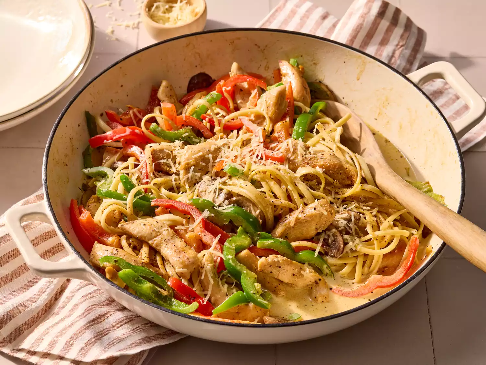

Cajun Chicken Pasta

Credit: Jake Sternquist / Food Styling: Holly Dreesman / Prop Styling:
Gabriel Greco
Chicken dredged in Cajun spices, sautéed with vegetables, and served in a
basil cream sauce over linguine is fit for Mardi Gras royalty. Laissez le
bon temp roulez!
Ingredients
- 4 ounces linguine or other pasta
- 2 skinless, boneless chicken breast halves
- 2 teaspoons Cajun seasoning
- 2 tablespoons butter
- 1 red bell pepper, sliced
- 1 green bell pepper, sliced
- 4 fresh mushrooms, sliced
- 1 green onion, chopped
- 1 cup heavy cream
- ¼ teaspoon dried basil
- ¼ teaspoon lemon pepper, or to taste
- ¼ teaspoon salt
- ⅛ teaspoon garlic powder
- ⅛ teaspoon ground black pepper
- ¼ cup grated Parmesan cheese
Steps
- Gather the ingredients.
- Bring a large pot of lightly salted water to a boil. Add pasta and cook until al dente, 8 to 10 minutes. Drain.
- Meanwhile, cut chicken breast into strips; place in a plastic zipper bag and add Cajun seasoning. Shake well to coat all pieces.
- Melt butter in a large skillet over medium heat. Add chicken and cook, stirring, until browned and almost cooked through, 5 to 7 minutes.
- Add bell peppers, mushrooms, and green onion. Sauté for 2 to 3 minutes, scaping any brown bits from the bottom of the skillet.
- Reduce the heat to medium low and stir in cream, basil, lemon pepper, salt, garlic powder, and black pepper. Add cooked pasta, tossing until heated through.
- Sprinkle with Parmesan and serve.
- Enjoy!
Home